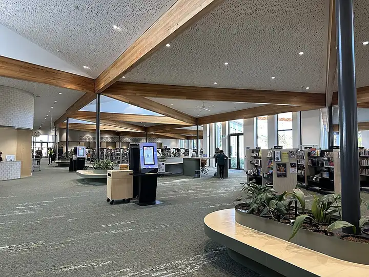

Glenroy Library
Glenroy Library is a library in Glenroy, in the Merri-Bek City Council area, best for little ones and primary-school kids. Wheatsheaf Rd/Plumpton Ave (bus) is a 3-minute walk away and the nearest public toilet is about 486 m away. Opening hours: opening_hours: Mo-We 09:00-20:00; Th 09:00-22:00; Fr 09:00-18:00; Sa 09:00-16:00; Su 13:00-17:00.


Quick facts
- Opening hours
- Mon–Wed 9am–8pm, Thu 9am–10pm, Fri 9am–6pm, Sat 9am–4pm, Sun 1pm–5pm
- Address
- 50 Wheatsheaf Road
- Phone
- +61 3 8311 4100
- Toilets
- 486 m away
- Public transport
- Wheatsheaf Rd/Plumpton Ave, bus (routes 513, 514), 3 min walk
This page has basic info from the map: name, location and type. We have not checked the details yet. Know this place? Tell us.
Details
- Opening hours
- opening_hours: Mo-We 09:00-20:00; Th 09:00-22:00; Fr 09:00-18:00; Sa 09:00-16:00; Su 13:00-17:00 (OpenStreetMap)
- Phone
- +61 3 8311 4100 (OpenStreetMap)
- Address
- 50 Wheatsheaf Road (OpenStreetMap)
Questions parents ask
- What are the opening hours of Glenroy Library?
- Glenroy Library is open Mon–Wed 9am–8pm, Thu 9am–10pm, Fri 9am–6pm, Sat 9am–4pm, Sun 1pm–5pm. Hours can change on public holidays, so check before you go.
- Where is Glenroy Library?
- Glenroy Library is in Glenroy, Victoria, at 50 Wheatsheaf Road.
- Is Glenroy Library free?
- Yes. It is a public library, free to visit.
- Are there toilets at Glenroy Library?
- The nearest public toilet is about 486 m away.
- How do I get to Glenroy Library by public transport?
- The closest stop is Wheatsheaf Rd/Plumpton Ave (routes 513, 514), a 3-minute walk.
- What is the phone number for Glenroy Library?
- Call Glenroy Library on +61 3 8311 4100.
Nearby places
- Playground at Bridget Shortell Reserve
Playground · GlenroyFreeBus 2 min walk
- Bridget Shortell Reserve
Park · GlenroyDogs allowedFreeBus 2 min walk
- Playground at G.E. Clarke Reserve
Playground · GlenroyFreeBus 2 min walk
- G.E. Clarke Reserve
Park · GlenroyFreeBus 3 min walk
- Skate park on Glenroy Road
Skate, BMX or pump track · GlenroyFreeBus 2 min walk
- KFC
Cafe or restaurant · GlenroyToilet nearbyBus 2 min walk
- Dosa Villas
Cafe or restaurant · GlenroyToilet nearbyTrain 3 min walk
- Skate park at Boeing Reserve
Skate, BMX or pump track · Strathmore HeightsToilet nearbyFreeBus 5 min walk